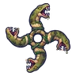
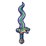

งูหนองพิษ
มอนธาตุพิษ Lv 50–62
เจอที่
| แมพ | โซน | Lv | ภูมิภาค |
|---|---|---|---|
| หนองพิษป่าชายเลน | 54–60 | แดนใต้สีแดง | |
| หนองพิษป่าชายเลน | ใจกลางหนองพิษ | 58–62 | แดนใต้สีแดง |
| ป่าชายเลนน้ำขึ้น | 50–62 | แดนใต้สีแดง | |
| บ่อโคลนพิษเดือด | 50–62 | แดนใต้สีแดง | |
| บ่อโคลนพิษเดือด | บ่อโคลนเดือดใหญ่ | 58–62 | แดนใต้สีแดง |
| ดงต้นไม้แขวนกรง | 50–62 | แดนใต้สีแดง | |
| ดงต้นไม้แขวนกรง | ต้นไม้กรงใหญ่ | 58–62 | แดนใต้สีแดง |
| หอรากมืด (Dark Root) | ทะเลยางดำ | 81–90 |
ค่าสถานะตามเลเวล
| Lv | HP | ATK | DEF | MDEF | EXP | Job |
|---|---|---|---|---|---|---|
| 50 | 11,220 | 111–167 | 18 | 9 | 67 | 50 |
| 56 | 15,098 | 124–186 | 20 | 10 | 74 | 56 |
| 62 | 19,765 | 138–207 | 22 | 11 | 81 | 61 |
ตีด้วยธาตุไหนดี
แรงขึ้น: —
เบาลง: มืด ×0.5 อมตะ ×0.5 พิษ ×0
วัตถุดิบที่ดรอป
| ของ | โอกาส | |
|---|---|---|
| คราบงูหนองพิษ | 55% | 1 ชิ้น (15% ได้ 2) |
อุปกรณ์ที่ดรอป (10)
| ของ | โอกาส |
|---|---|
| 0.25% | |
| 0.25% | |
| 0.25% | |
| 0.12% | |
| 0.12% | |
| 0.12% | |
 ดาวยักษ์งูหนองสี่ตัว | 0.12% |
| 0.12% | |
| 0.12% | |
 ดาบอสรพิษหนองน้ำ | 0.06% |
สกิล
ยิงไกล (Lv 25+) · ยิงไกล (Lv 60+) · แอ่ง (Lv 60+)